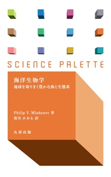
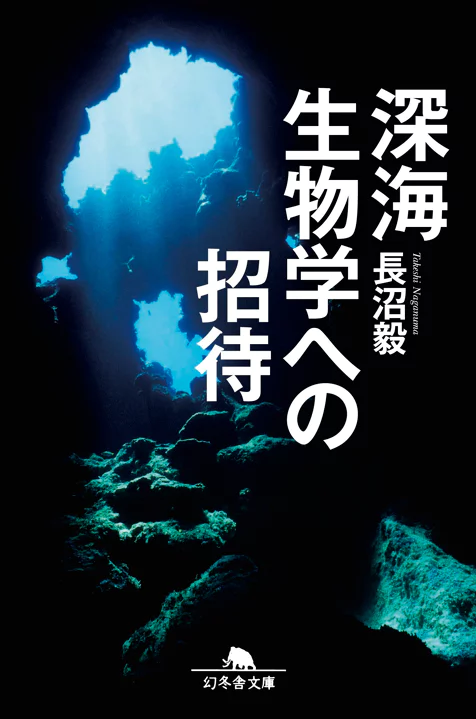
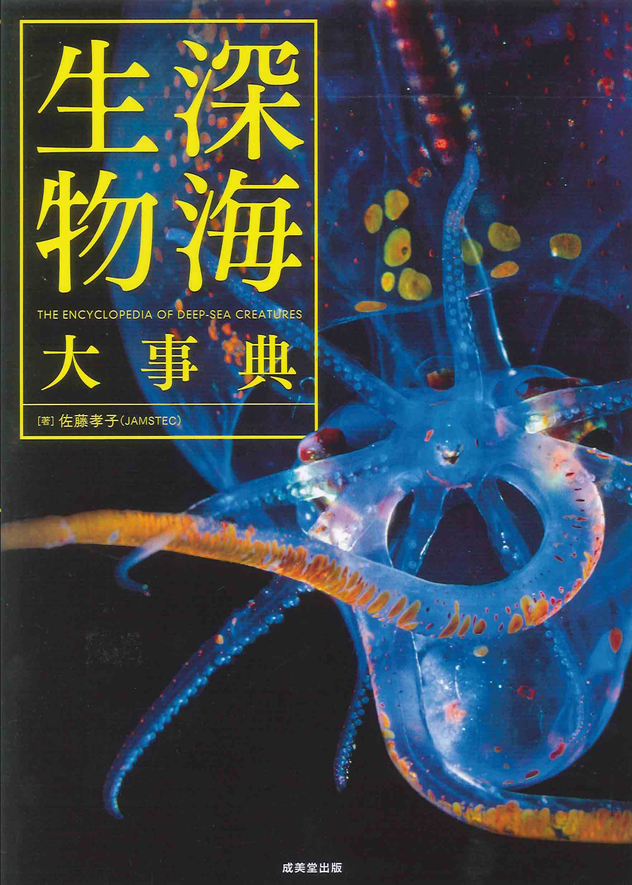
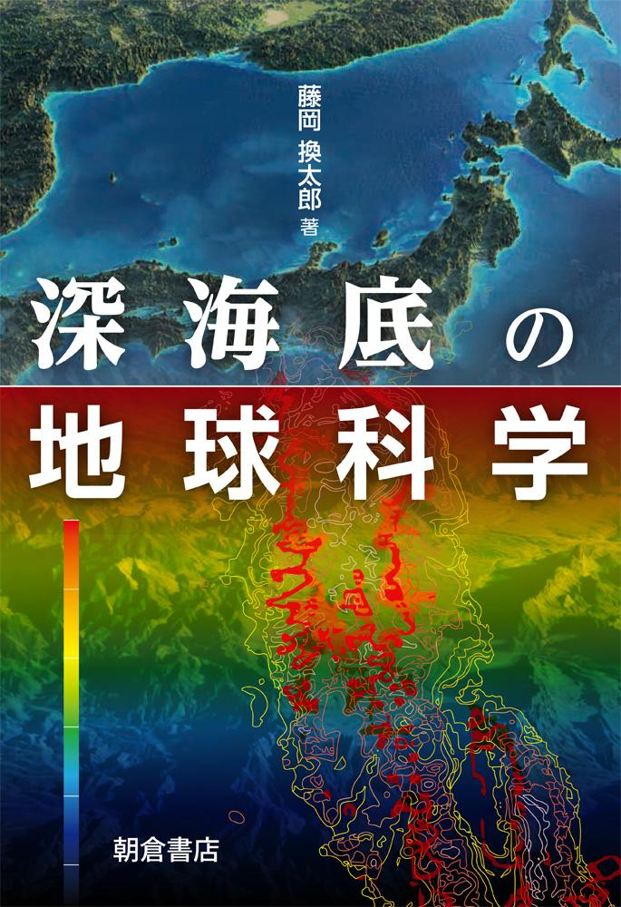
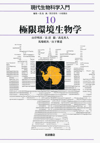
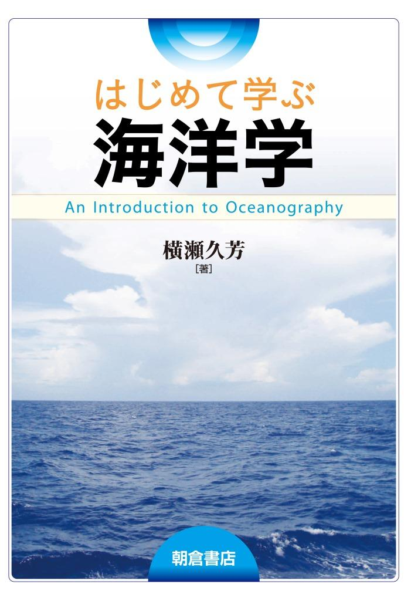
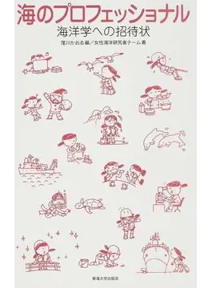
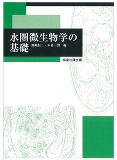
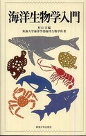

2023年11月18日課題
質問
回答
回答・調査プロセス
情報資源
キーワード
Info
About
質問
30歳で今、実は失業中です・・・。
でも前向きに、しばらくは貯金で過ごします。
NHKラジオで、1億年も深海で生息してきた生物がいると紹介されていました。
あえて厳しい環境(水温がかなり高い)で外敵もなく、ほとんど栄養も摂ることなく、のようです。
詳しく勉強したいのですが、入門の書籍をご紹介ください。
回答
調査の結果、以下の書籍が見つかりました。
深海に関する書籍
窪川かおる『海洋生物学 地球を取りまく豊かな海と生態系』丸善出版、2015年
 詳しい書籍情報はこちら
長沼毅『深海生物学への招待』幻冬舎、2013年
 詳しい書籍情報はこちら
佐藤孝子『深海生物大事典』成美堂出版、2014年
 詳しい書籍情報はこちら
藤岡換太郎『深海底の地球科学』朝倉書店、2016年
 詳しい書籍情報はこちら
浅島誠ほか『現代生物科学入門10 極限環境生物学』岩波書店、2010年
 詳しい書籍情報はこちら
海洋学に関する書籍
横瀬久芳『はじめて学ぶ海洋学』朝倉書店、2015年
 詳しい書籍情報はこちら
窪川かおる『海洋学への招待状』東海大学出版会、2010年
 詳しい書籍情報はこちら
濵﨑恒二・木暮一啓編『水圏微生物学の基礎』恒星社厚生閣、2015年
 詳しい書籍情報はこちら
東海大学海洋学部海洋生物学科『海洋生物学入門』東海大学出版会、2008年
 詳しい書籍情報はこちら
回答・調査プロセス
Googleで「深海生物 入門書」と検索。
Googleで「海洋学 入門書」と検索。
東京大学農学生命科学図書館のサイトを参考に回答を作成。
北海道大学のLASBOSを参考に回答を作成。
情報資源
東京大学農学生命科学図書館
北海道大学のLASBOS
キーワード
深海生物
海洋学
Information
更新情報などはこちら
About Link
・サイト名：情報サービス演習B
11月18日課題
・管理人名：日本語・日本文学科4年 大木弥生
・URL：
こちらをクリック
まとめサイトはこちらから
▲top